Portfolio
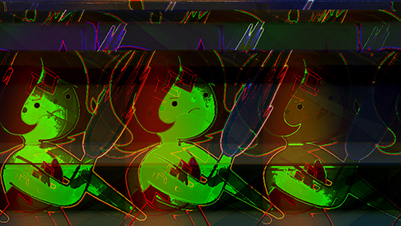
Corrupted Vault of Bones, Glitch Art, 2019
I imported the picture into Audacity and then applied Distortion and Echo onto the data. After layering the effects on top of each other, this was the end result. The original picture was a screenshot from an episode of Adventure Time, a show that I used to watch when I was in High School.
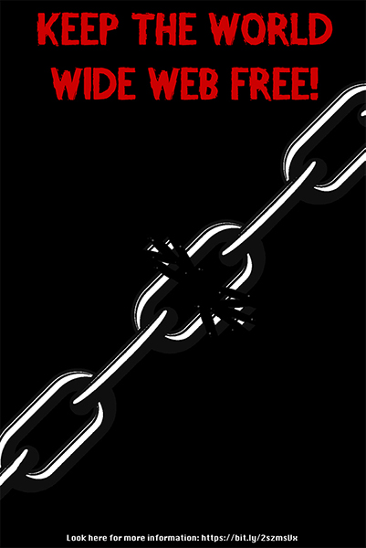
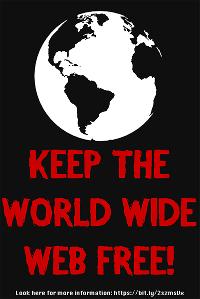
Keep the World Wide Web Free, Composite Art, 2019
These pictures were made in protest to Article 13, a law in the EU that could threaten the freedom of internet users in Europe and possibly the rest of the world at large. I wanted to make the images as striking as possible, so I took images that were symbolically related to the message and made them monochrome. I also downloaded a custom font, Dead Man Walking, and typed out the messages in that font in order to make the slogan “Keep the World Wide Web Free!” more striking to the users.
University Noises, Digital Audio, 2019
I made this song from noises I recorded as I explored university. The tapping of a locker, the near silence of an empty hall, and the sound of a cash register was used for this. I wanted to create audio that represented the environment of university.
You can also link to images using the 'img' tag.
The Ambience of University, Digital Video, 2019
This video is more of an expansion of University Noises, only instead of just audio, I record specific objects or spots on university. I wanted to give off a rather lax environment as I showed off a project, a hallway, and a busy quad with a lot of people walking by.
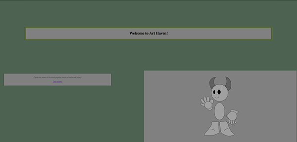
This is a website I created based on my earliest memories of the internet. Specifically, I designed a website based on the website DeviantART, a website I used to frequent as a young tween in middle school. I created some art based on the type of art I would see on dA and wrote little descriptions for each piece of art.
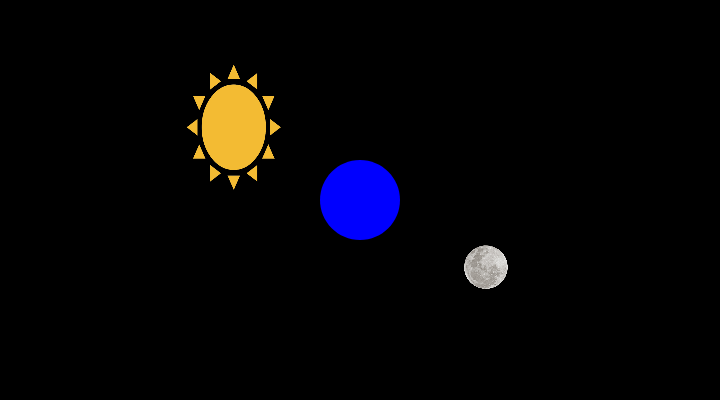
This is simply known as the Sun and the Moon. I opted to explore rotation around a certain object with this project. While it isn't that advanced, it does convey quite a bit about how everything seems to work. Even if it isn't completely accurate, I believe it turned out fairly well. In the end, I made a fairly interesting and minimalist interactive piece.
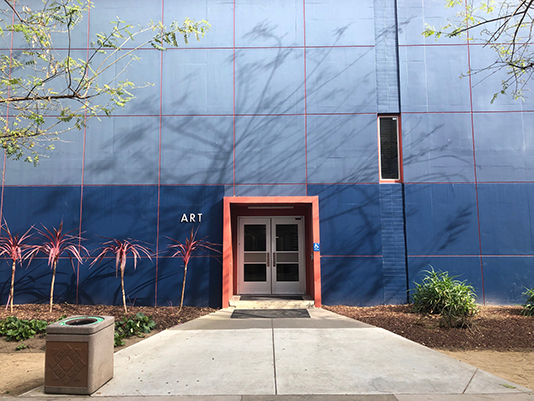
Stressed Student, Combination Piece (Glitch Art and Net Art), 2019
This is an accumulation of a lot of the passion and emotions I had throughout this semester. I wanted to create something that many other students could understand and relate to. I wanted to send a message through this site and I've spent quite a bit to make sure it came out right. This website represented the mindset I had while making this and ultimately, I feel like a lot of other students could understand this.
A Journey to Knowledge, Video Piece, 2019
A Journey to Knowledge takes us through the average trip of someone commuting to SJSU from another town. with minimal dialogue and editing, it gives us a simple journey of one of the many students who could attend this university. the shaky nature of the footage can show the general anxiety bottled up in a student as they get closer to their destination and the zoom in on the the camera sign can be an indication of how they are now in the domain of San Jose State. I feel like it'd a good idea to simply show off a typical journey for someone like me who can't drive on his own and has to commute via public transportation. Needless to say, it turned out well.
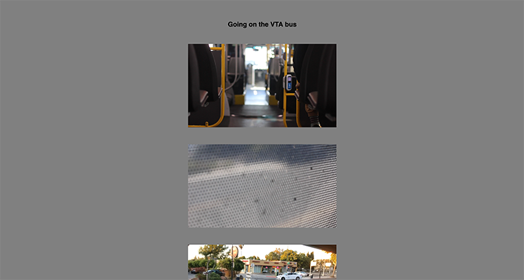
Traveling on VTA, Concept Piece for Installation Art, 2019
A collaboration with Krystal Ruiz, these videos were designed as concept footage for a possible installation in an exhibit. This exhibit will be a replica of the backseats of a VTA bus. A full backset and two seats on both sides in front of it as well as a window on the side with a monitor behind it. The monitor would play footage of whatever the bus passes by before glitching into various instances of nature and other relaxing imagery to emulate the experience of daydreaming. Vines and other odd items can start to come in from the window as you sit there, wind blowing in your face as you sit there. It would serve as a relaxing spot for people to sit in after a long time of walking.


Blippar Showcase, Combination Piece (Augmented Reality Art and Net Art), 2019
This was primarily done to test out the possibilities of Blippar. It had shown that it was an expensive piece of technology and that it had a good reason for the price range. While you can simply test it for free, actually publishing them is a different story. In any case, I hope that by doing these animations, it'll give others ideas for how they could use Blippar themselves.
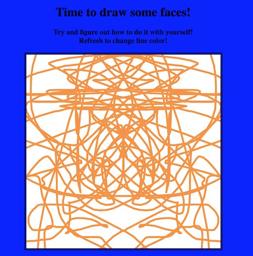
I made this under a lot of stress and while it may be basic since I had to rely on what I learned from class, it was fun to experiment with coding the drawing board and thanks to a fluke, I managed to created a somewhat unique means of drawing. While it might not be perfect, it's certainly something I'm happy with.
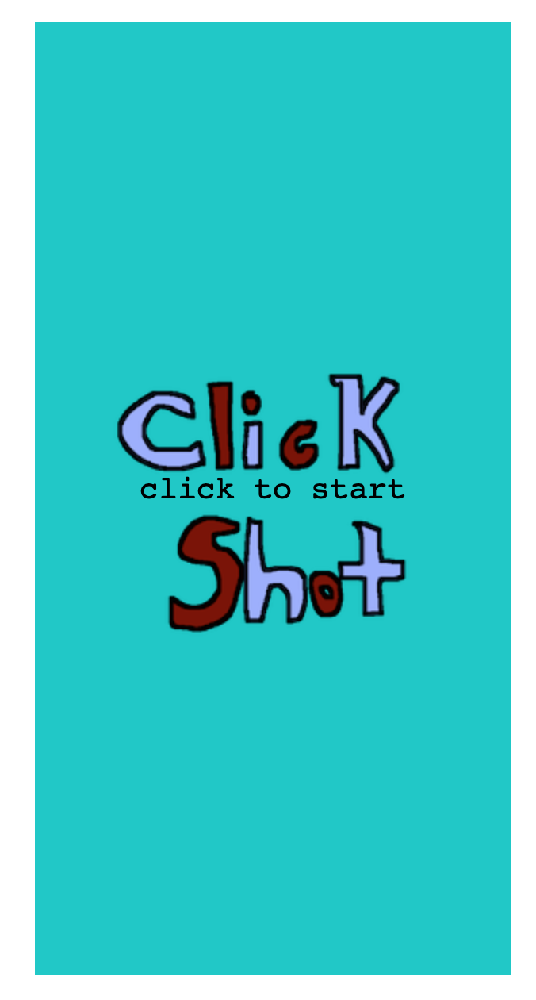
This was my final test for my digital media class and I wanted to make something that was easy, but also something that people would actually play as well as being its own thing. I went for the Shmup genre with this game since I always felt that if a game on social life online should be made, it would feel like a battlefield. With you controlling a cursor with the arrow keys and the shooting being done with ENTER, it should be a somewhat fun time.
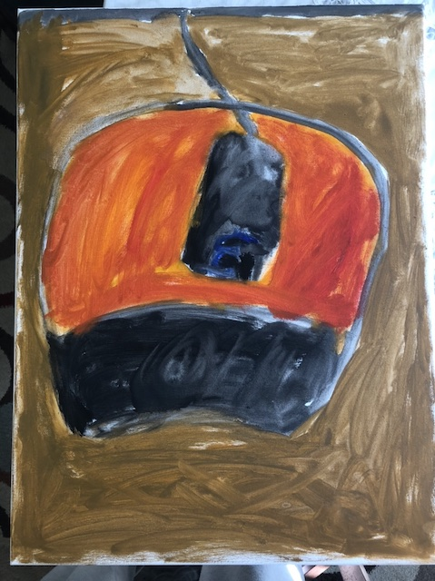
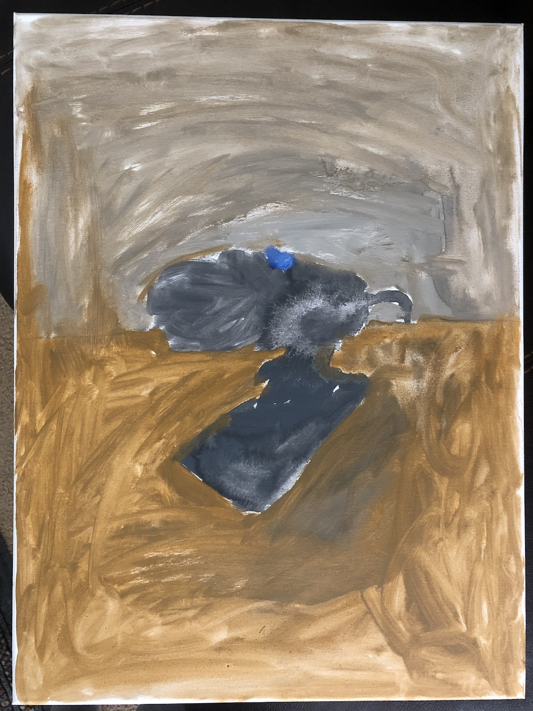
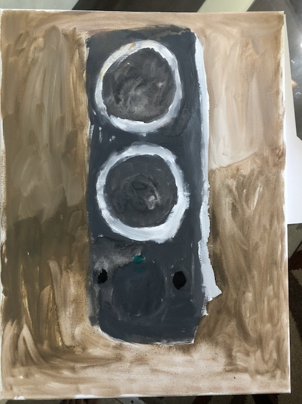
Still Life, Oil Paintings, 2021
I painted these as my final for my figure drawing class. It was a difficult thing considering that it was my last semester and I had a lot of things to go over at the time. I decided that for my still life, I would draw some of the things that I often see, which ended up being parts of my computer. A speaker, my mouse, and a microphone are some of the things that sit on that desk and I'm glad to see how they turned out. It took some time to get right, but the solvents helped moving the colors around.
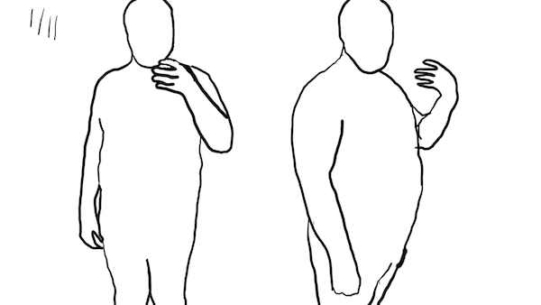
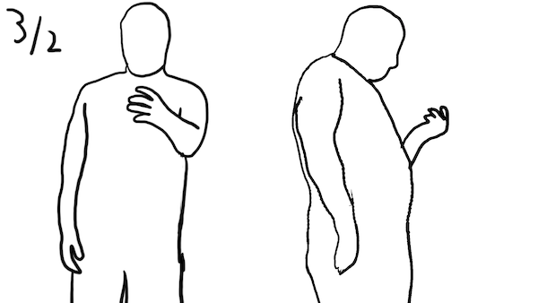
This was made as my actual last project for my university or my capstone as some may know it as. At the start of the year, I've been dealing with health problems due to my weight and with everything feeling so uncertain at the time, I felt like I had to make a change, which was why I ultimately decided to use university as my motivation to lose weight. I was able to drop around 50-60 pounds over the course of the semester and it ultimately made me feel a lot better seeing just how art can change people. I hope that this will serve as inspiration for everyone else. The full piece can currently be seen in this exhibition.